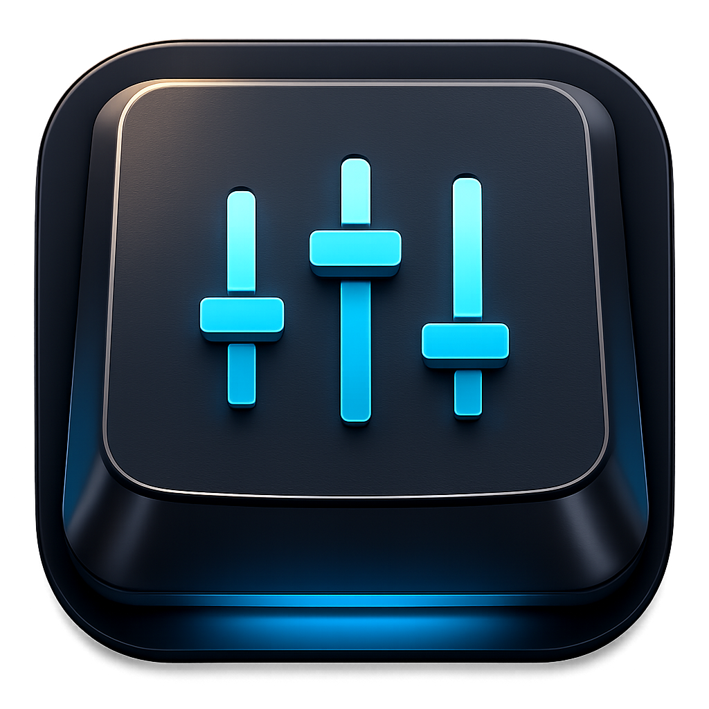

Single purpose
A dedicated window that opens the official Keychron Launcher directly.

Electron + WebHID
Dedicated desktop utility for opening the official Keychron Launcher without installing a general-purpose browser. Available for Linux, Windows, and macOS distributions.
A dedicated window that opens the official Keychron Launcher directly.
HID permission flow is handled in Electron for wired USB keyboards.
No tabs, no address bar, and strict domain allowlisting.
This is an independent community project. Keychron and related names are trademarks of their respective owners.